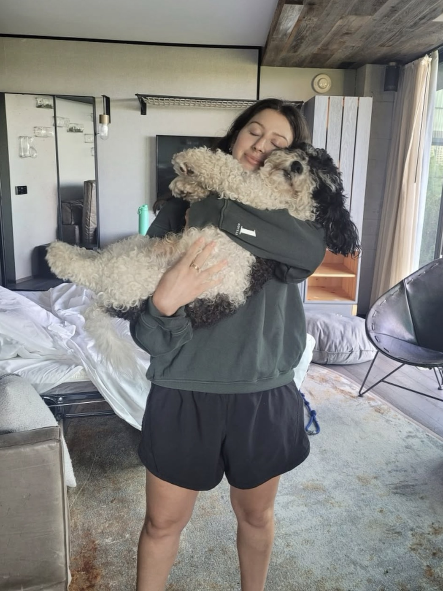

Your values are already leaving clues.
I did my homework. You light up around your family, especially your brother. You have traveled enough to make me jealous. You got close enough to an elephant to have a real story and somehow avoided getting trampled.
And in the presence of dogs, your whole nervous system settles. Those are not random details. They point toward what brings you alive, what steadies you, and what matters enough to protect.
This exercise starts with clues like those, then helps you give Radius language sturdy enough for real decisions: who fits, what gets protected as the company grows, and which value wins when two good things pull in different directions.
Name what is already true
First, go hang out with a dog today. That would be a wonderful thing to do.
EricName the values Radius already lives by.
This is not about choosing impressive words for a wall. It starts with what has actually happened and the patterns inside it.
Begin with a few hard stories about the employees, exes, or partners who cost you the most. Type them or speak them. The rest will make sense as it happens.
The answers stay in this browser and are not submitted to Farewell Holdings, so they can be as blunt as they need to be. At the end, you can print your results or save them as a PDF.